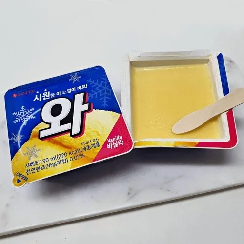
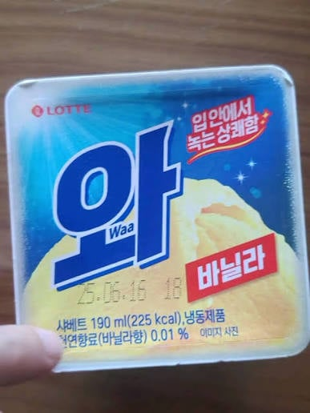

바로
와
원래는 천연 바닐라향이 0.07% 들어가서
부드럽고 달콤한 향이 아이덴티티였던 아이스크림인데

어느새 함량이 0.01%까지 너프당하고
싸구려 합성 바닐라향료로 채워져
정체성 그 자체였던 맛이 사라졌다
게다가 유지방 함량까지 너프당한건지 뻑뻑해진 맛은 덤
근데 가격은 2배 올랐다....

바로
와
원래는 천연 바닐라향이 0.07% 들어가서
부드럽고 달콤한 향이 아이덴티티였던 아이스크림인데

어느새 함량이 0.01%까지 너프당하고
싸구려 합성 바닐라향료로 채워져
정체성 그 자체였던 맛이 사라졌다
게다가 유지방 함량까지 너프당한건지 뻑뻑해진 맛은 덤
근데 가격은 2배 올랐다....
어쩐지
존나 누런 색이다가 하얘진 게 맞지?
와 !
부드러웠는데 설레임처럼됐음
맞다 서걱거려서 안먹어 ㅋㅋㅋ
와...시발
향만나겟네
와 이건 좀
어릴때 먹어보고 와 맛있다! 이래서 와 구나! 했었는데 ㅋㅋㅋ
옛날맛이 기억 안나긴하는데
걍 지금 맛은 깔끔해서 나쁘지않음
언제부턴가 인공감미료맛이 너무 강하더니만 진짜 바뀐거라고?